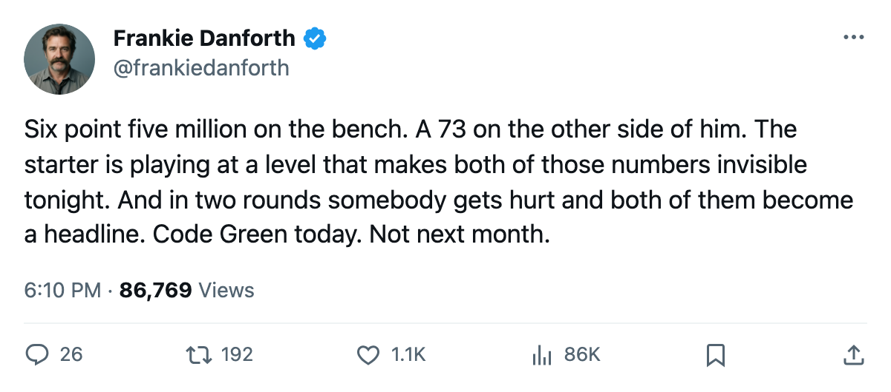

TOR
TORTHE PANIC METER, PLAYOFF EDITION: Code Green, and a $6.50M problem nobody in this building mentions
Luongo starts every night. The 39-year-old at $6.50M watches. The backup on the bench grades 73.
 Frankie DanforthColumnist · Queen City Telegram
Frankie DanforthColumnist · Queen City Telegram
Code Green

The piece
Code Green. Two games in, two wins, a 1.01 GAA from the starting goaltender, and a series on the road where the opponent has managed 2 goals across 2 games. This should be a quick exit from the first round and a long wait for the next challenge.
I keep looking at the bench. Ed Belfour, 39 years old, 91 overall, $6.50M, 1 year left on the contract. He dressed 37 games in the regular season, logged 58.8 minutes a night when he played, and now watches  Roberto Luongo95 start every playoff night from the side of the ice. Belfour's overall sits at 91. The Development Index does not list him, meaning his form reads at base. He is a quality goaltender with the largest salary on this roster and zero playoff games.
Roberto Luongo95 start every playoff night from the side of the ice. Belfour's overall sits at 91. The Development Index does not list him, meaning his form reads at base. He is a quality goaltender with the largest salary on this roster and zero playoff games.
The backup behind Luongo in these games is Mikael Tellqvist73, 73 overall, listed at -3 on the Index, meaning his current read sits 3 points below his base. He played 11 regular-season games at 56.4 minutes per appearance. That is the 73-overall backup the coach calls if Luongo goes down.
What happens to Belfour's $6.50M next year? The starting job belongs to a 26-year-old at $1.60M. The front office has not moved on it in the 12 months of my coverage, or in the 2 years of his current deal, which runs 1 more season.
The workload tells you what they think
Luongo: 45 regular-season starts, 2 playoff starts, 60.9 minutes a night on average when he dressed. The coach gave him the job in October and never looked at the bench during a game. Belfour's 37 starts produced the Jennings Trophy last season and 58.8 minutes a night this one. The numbers describe a clear hierarchy with an expensive footnote.
Tellqvist at 73 is the problem on the bench in a different way. If Luongo goes down, the coach starts a 73 in the second round against a 1.00 GAA. You need a backup with an 80.
The Green is deserved. The series is under control. But this roster has a $6.50M goaltender who cannot play and a 73-overall backup who would play if the starter falls. That structure does not survive a 2-round run without the front office doing something. The deadline 24 days ago produced no goaltender with an 80. The next deadline is October. The next season is 174 days away.
